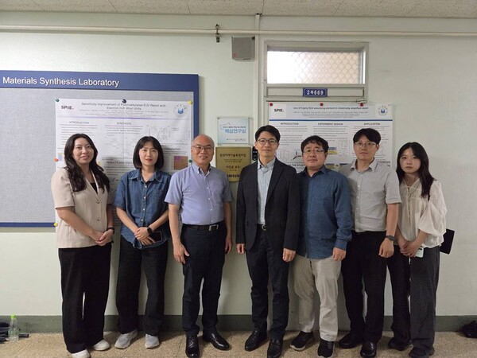
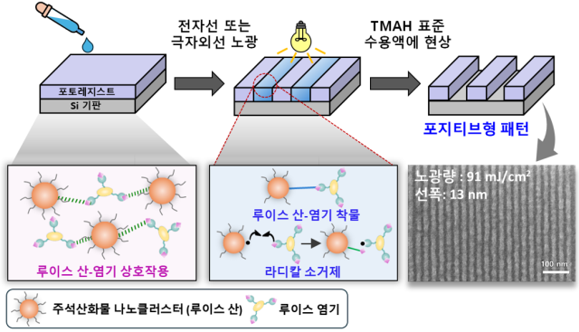
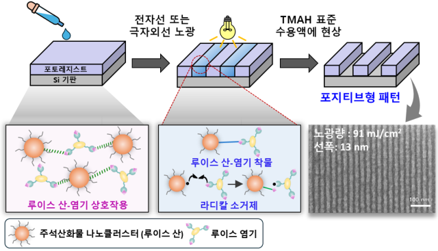

NOTICE
인하대, 삼성전자와 하이-NA EUV용 포토레지스트 공동 개발
Date: 2025. 07. 18
Author: MSL Webmaster

[서울경제]
인하대 고분자공학과 이진균 교수 연구팀이 삼성전자 반도체(DS) 부문과의 공동 연구로 하이(High)-NA 극자외선(EUV)용 포토레지스트를 개발했다고 18일 밝혔다.
이 교수 연구팀은 삼성전자 반도체연구소의 최진 마스터 연구팀, 서울시립대학교 신소재공학과 연구팀과 함께 High-NA EUV 노광 공정에서 활용할 수 있는 신개념 포토레지스트(PR)를 개발했다고 밝혔다. 이번 연구는 삼성전자 반도체연구소와 삼성전자 미래기술육성센터의 연구비 지원으로 이뤄졌다.
반도체 제작 과정에는 빛을 활용해 웨이퍼 위에 회로 모양을 반복적으로 찍어내는 노광 공정 있다.
이 과정에서 핵심 역할을 담당하는 화학 소재가 PR이다. 웨이퍼에 PR이 도포돼 있어야 빛이 회로 모양을 찍어낼 수 있기 때문이다.

특히 최근 노광 공정이 13.5㎚ 파장의 EUV를 활용하면서 정밀도가 높은 고해상도 포토레지스트를 확보해야 하는 과제가 생겼다.
이번에 인하대·삼성전자·서울시립대 공동연구팀은 '포지티브형(양각)' 회로 패턴을 제조할 수 있는 EUV 무기포토레지스트(MOR)를 개발했다. 주석 산화물의 화학적 특성을 바탕으로 폴리페놀 첨가제를 적용한 것이 특징이다.
이 소재는 기존 EUV 노광에서 한층 고도화되는 High-NA EUV 조건에서 10㎚ 수준의 미세한 양각 회로 형성이 가능하다는 것을 보여줬다.
이번 연구성과는 최근 출간된 국제 학술지인 어드밴스드 펑셔널 머티리얼즈(Advanced Functional Materials)에 “주석산화물 기반 극자외선 리소그래피용 포지티브형 포토레지스트 소재 개발”이라는 제목으로 발표됐다.
또한 논문의 제 1저자인 김가영 인하대 박사과정생은 연구 성과를 바탕으로 제31회 삼성휴먼테크논문대상에서 재료과학 및 공학 부문 은상을 수상하기도 했다. 김가영 박사과정생은 “기술 혁신을 주도하는 삼성전자와 대학 연구실간 긴밀한 협력 속에서 새로운 가능성에 도전해 보는 값진 경험을 했다”고 말했다.
[서울경제]
인하대 고분자공학과 이진균 교수 연구팀이 삼성전자 반도체(DS) 부문과의 공동 연구로 하이(High)-NA 극자외선(EUV)용 포토레지스트를 개발했다고 18일 밝혔다.
이 교수 연구팀은 삼성전자 반도체연구소의 최진 마스터 연구팀, 서울시립대학교 신소재공학과 연구팀과 함께 High-NA EUV 노광 공정에서 활용할 수 있는 신개념 포토레지스트(PR)를 개발했다고 밝혔다. 이번 연구는 삼성전자 반도체연구소와 삼성전자 미래기술육성센터의 연구비 지원으로 이뤄졌다.
반도체 제작 과정에는 빛을 활용해 웨이퍼 위에 회로 모양을 반복적으로 찍어내는 노광 공정 있다.
이 과정에서 핵심 역할을 담당하는 화학 소재가 PR이다. 웨이퍼에 PR이 도포돼 있어야 빛이 회로 모양을 찍어낼 수 있기 때문이다.

특히 최근 노광 공정이 13.5㎚ 파장의 EUV를 활용하면서 정밀도가 높은 고해상도 포토레지스트를 확보해야 하는 과제가 생겼다.
이번에 인하대·삼성전자·서울시립대 공동연구팀은 '포지티브형(양각)' 회로 패턴을 제조할 수 있는 EUV 무기포토레지스트(MOR)를 개발했다. 주석 산화물의 화학적 특성을 바탕으로 폴리페놀 첨가제를 적용한 것이 특징이다.
이 소재는 기존 EUV 노광에서 한층 고도화되는 High-NA EUV 조건에서 10㎚ 수준의 미세한 양각 회로 형성이 가능하다는 것을 보여줬다.
이번 연구성과는 최근 출간된 국제 학술지인 어드밴스드 펑셔널 머티리얼즈(Advanced Functional Materials)에 “주석산화물 기반 극자외선 리소그래피용 포지티브형 포토레지스트 소재 개발”이라는 제목으로 발표됐다.
또한 논문의 제 1저자인 김가영 인하대 박사과정생은 연구 성과를 바탕으로 제31회 삼성휴먼테크논문대상에서 재료과학 및 공학 부문 은상을 수상하기도 했다. 김가영 박사과정생은 “기술 혁신을 주도하는 삼성전자와 대학 연구실간 긴밀한 협력 속에서 새로운 가능성에 도전해 보는 값진 경험을 했다”고 말했다.